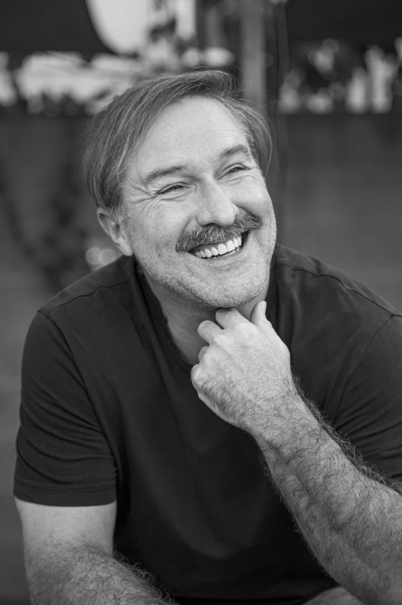

About
Greg Campbell is an award-winning documentary filmmaker, journalist and nonfiction author. Known for creative storytelling and tenacious reporting, Greg connects audiences to stories around the globe with humanity and wit, always seeking the universal human connection at the heart of them all. He also teaches an online narrative nonfiction workshop, mentoring the next generation of longform writers and journalists. He lives in Los Angeles.
Get in Touch